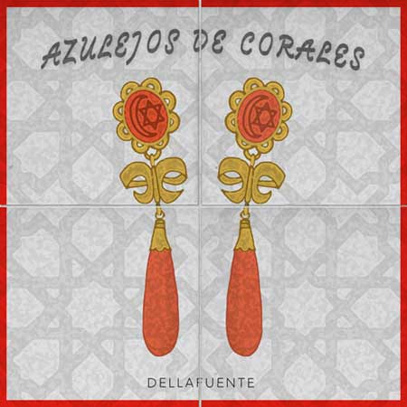
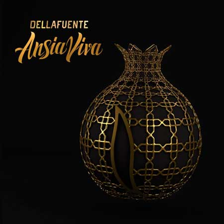
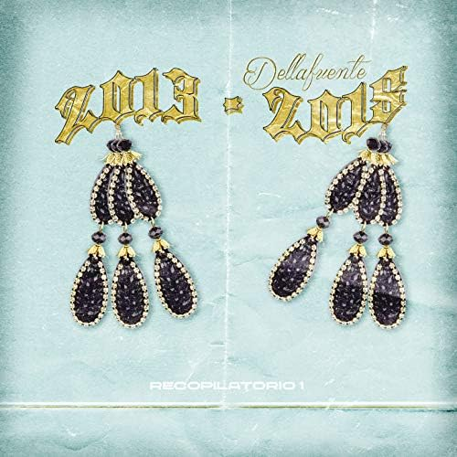
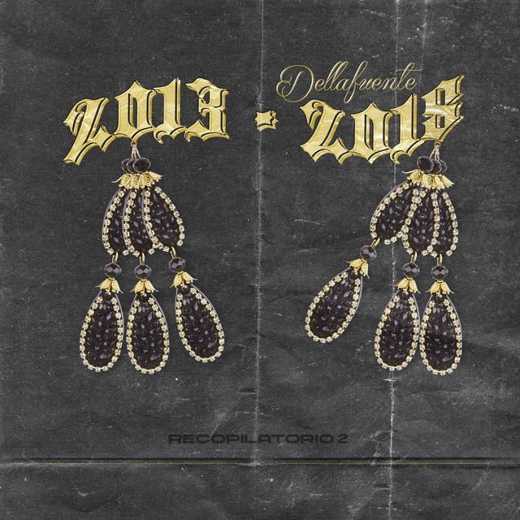
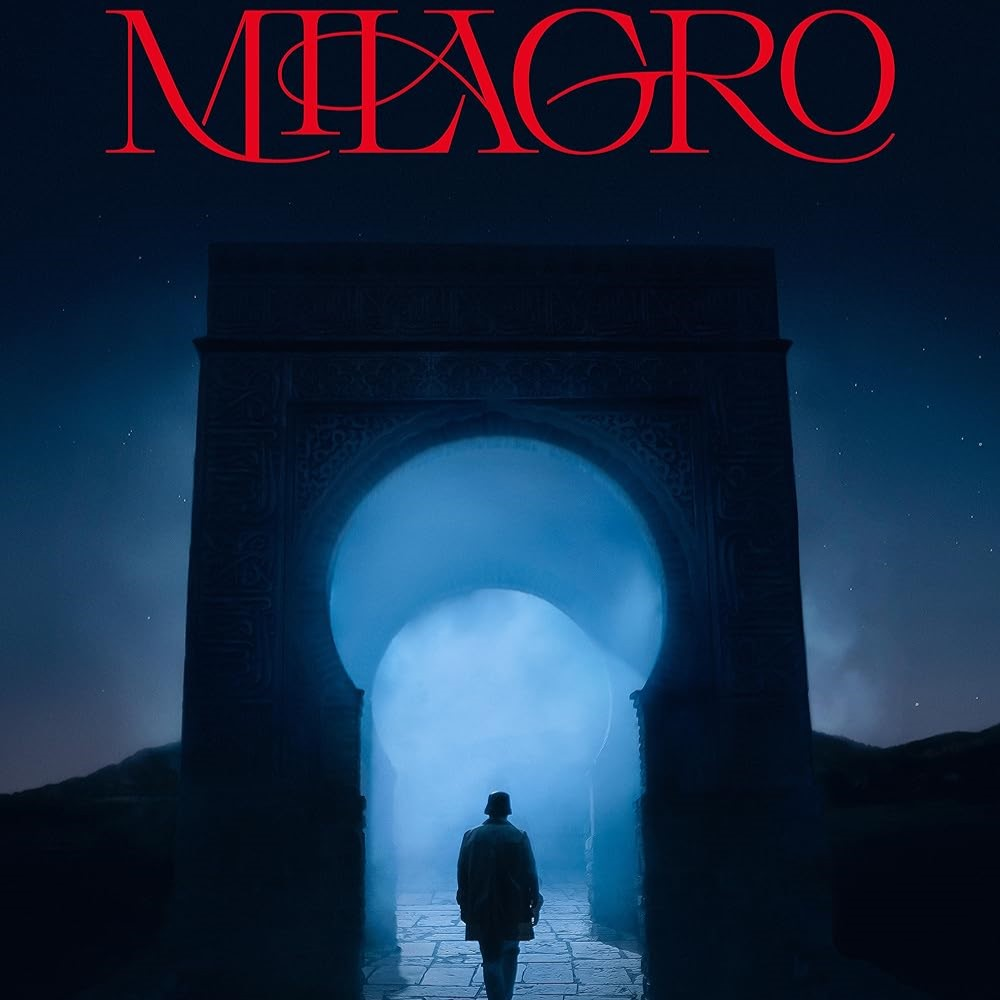
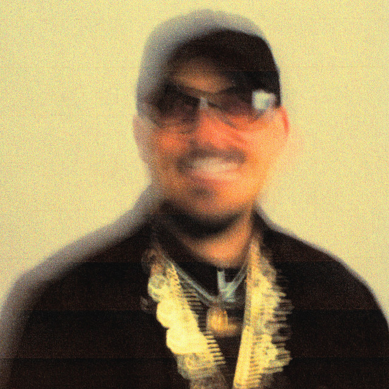
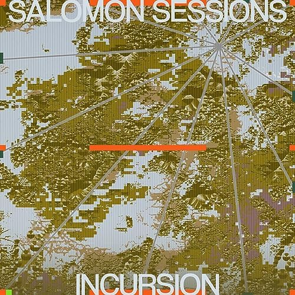

Dellafuente es un cantante y compositor nacido en Granada en 1993.
Su estilo fusiona flamenco, rap, trap y música urbana, creando un sonido único que ha ganado popularidad en España.
Sus canciones destacan por sus letras emotivas y profundas.
ALBUMES

2015 18 canciones

2016 13 canciones

2018 12 canciones

2018 16 canciones
2020 10 canciones

2021 7 canciones

2023 8 canciones

2023 10 canciones
2024 11 canciones
MIS CANCIONES FAVS
1. El Color del Dolor del album "Ansia Viva"
2. Sanuk Sabai Saduak del album "Milagro"
3. Olvidame del album "Recopilatorio 2 (2013-2018)"
4. No Vendo Humo del album "Azulejos de Corales"
5. Tengan Mi Sangre del album "Recopilatorio 2 (2013-2018)"